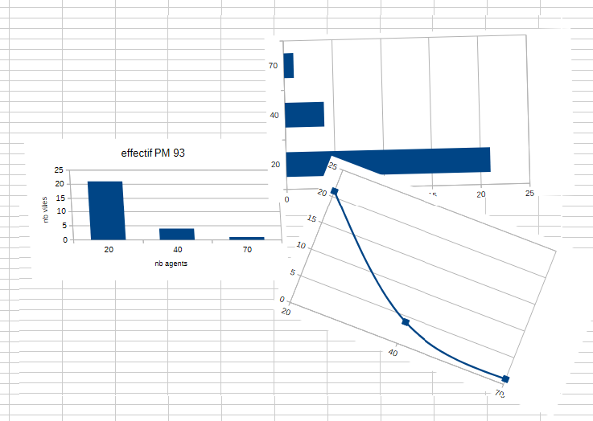
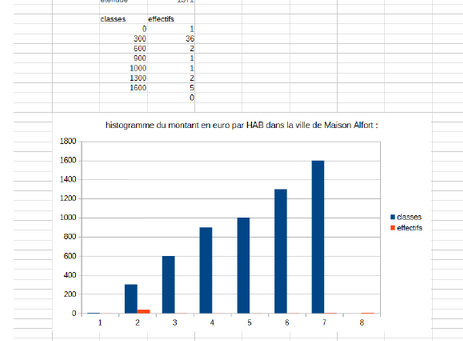
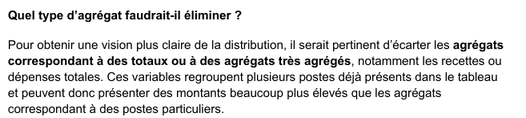
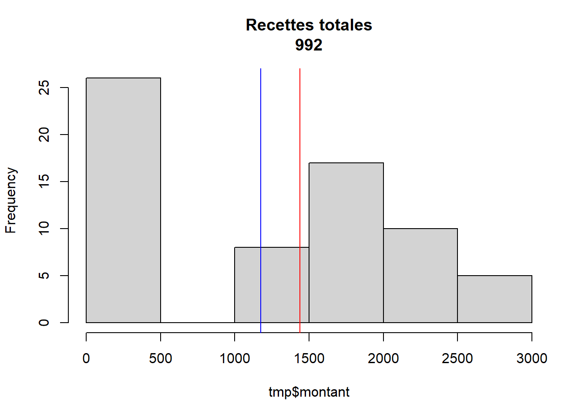
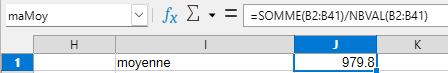
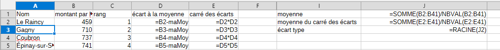

Statistique univariée
Télécharger et ouvrir le fichier de données du cours.
data <- read.csv2("data/potentiel-fiscal-resultat-gc.csv")
maData <- data [data$Département == '93',]1 Termes
1.1 Trouver des termes pour les objets en statistiques
exemples
variable,
observation,
valeur
A vous !
On retiendra pour le moment uniquement les termes : individu / population / variable et modalité
1.2 distinguer tableau complet, tig, tableau condensé
Individu -> Modalité
Modalité -> Individus
2 L’essentiel : la forme d’une distribution
2.1 Abscisses et ordonnées

2.2 Tiges et feuilles
discrétisation la plus rudimentaire
2.3 Et sous un tableur
2.3.0.1 Resultat attendu

Et non pas :

2.3.1 Préparation de l’exercice
2.3.1.1 Filtres colonne pour TIG
Pour obtenir un TIG avec une seule variable, quelle variable choisir et pour quels individus ?
Dans l’exemple proposé du cours (Potentiel fiscal et police municipale), on choisit la colonne de la dénomination des communes (26 communes sur le 93) et le nombre d’agents

2.3.1.2 Savoir faire tableur
Cet exercice permet d’utiliser dans le tableur :
raccourcis claviers de déplacement (CTRL et flèches) et de sélection (CTRL et flèches + MAJ)
utilisation de la barre de formule
formule simple : minimum et maximum
formule frequence, formule matricielle (CTRL + MAJ + ENTREE)
le graphique en barre et la personnalisation (transformation données étiquettes)
Pour mémoire, formules du tableau

Voir également cette vidéo sur internet
2.3.2 Quel commentaire ?
- étendue
## Min. 1st Qu. Median Mean 3rd Qu. Max.
## 3.00 9.25 14.00 16.15 19.00 63.00Concernant notre exemple, il y a une grande disparité entre les communes, certaines ont 3 agents, d’autres 63.
- forme de la distribution
L’énorme majorité des communes ont moins de 20 agents. Une seule commune possède plus de 60 agents, il s’agit d’Aulnay sous Bois. Son maire étant un ancien lieutenant de la police nationale.
2.4 A explorer
Autres graphiques : graphique en barres, lignes (lissage)

Observer la disposition des bornes : elles sont utilisées comme des étiquettes et non pas comme une série de valeurs.
Sous R, l’histogramme est un des graphiques le plus simple à obtenir.
hist(maData$Nombre.de.policiers.et.de.gardes.champêtres, xlab = "Effectif PM", ylab = "Nb de communes",
main = "Répartition des effectifs de PM par commune")
L’histogramme souligne l’originalité d’Aulnay sous bois par rapport autres communes.
2.5 Correction exercice dénombrement des agrégats financiers (MAISON 1)
Remise 55 sur 74 inscrits.
2.5.1 Le séparateur décimal (, ou . ?)
Sous Calc, l’astuce consiste à modifier les paramètres linguistiques.

Pour un tableur, le chiffre se positionne à droite de la cellule, le texte à gauche.
2.5.2 Commentaires généraux qui valent pour tous les exercices et surtout le DST
2.5.2.1 De quoi on parle ?
Attention à toujours définir sa donnée dés le départ y compris sa source.

Dans le cadre de l’exercice, c’est la commune et ses agrégats financiers :
comptes consolidés (tous les budgets de la commune)
agrégats liés au budget (dépenses - recettes à l’équilibre), mais également solde, bilans…
2.5.2.2 Pour la forme
J’ai sanctionné les copies illisibles.
A retenir :
Ne jamais mettre un tableau de données dans sa copie !
Ne jamais prendre en photo son écran !
Eviter absolument une copie d’écran de l’ensemble de son écran.
Le mieux traitement de texte dans lequel on insère un graphique image (copie d’écran CTRL + MAJ + S puis CTRL + V pour coller), puis enregistrement en .pdf au final.
Attention aux nombreuses pages inutiles si on passe directement du tableur au traitement de texte (la palme revient à un étudiant qui m’a envoyé 63 pages)
Attention également, enregistrement en .pdf de sa copie (éviter le .pdf.pdf)
Ne pas oublier de soigner ses titres.
2.5.2.3 Concision du commentaire
Ne jamais oublier que l’exercice ne vaut que 1 ou 2 points et que je les corrige rapidement.

Prochain exercice, commentaire plus court. 2 phrases maximum, 1 page au total, aller à l’essentiel.
Il y plus de gros agrégats que de petits (ou l’inverse)
Et préciser quel agrégat est remarquable et pourquoi ?
2.5.2.4 Vocabulaire
Revenir sur le terme : formule fréquence et son graphique
Diagramme de fréquence, histogramme…
Le mieux : Discrétisation des agrégats financiers en fonction de leur montant (euros / hbt)
2.5.3 Plus précisemment
2.5.3.1 Résultat faux

2.5.3.2 Problème sur les classes dans le graphique
Il faut afficher les bornes.

Bug repéré sous Libre Office
Une solution, afficher les étiquettes sur les barres

2.5.3.3 Autres méthodes
Une méthode différente est valide également (le tableau croisé dynamique dit pilote dans libre office)

2.5.4 Les agrégats à supprimer
La bonne réponse était les totaux, j’ai accepté les réponses autour des valeurs aberrantes.

3 Pour raffiner : les indicateurs
Nous avons déjà vu l’amplitude à travers minimum et maximum. Il y a d’autres indicateurs. Ils servent à résumer la série statistique
Nous allons montrer comment calculer médiane, moyenne et écart type dans le tableur.
Pour l’exemple, on prend un agrégat budgétaire connu : celui des frais du personnel.
Afin de pouvoir comparer les communes de taille différente, on utilise les montants par habitant.
## 'data.frame': 40 obs. of 2 variables:
## $ Nom : chr "Dugny" "Pantin" "Coubron" "Villemomble" ...
## $ montant.par.hbt: num 1308 1133 737 832 459 ...hist(data$montant.par.hbt, freq = FALSE, main = "Dpt 93 - répartition des dépenses du personnel par commune", xlab = "euros par habitant")
lines(density(data$montant.par.hbt), col="red", lwd = 2)
La majorité des communes ont des dépenses moyennes (1000) par habitant.
Cas extrêmes : Le Raincy (peu), Tremblay (beaucoup)
3.1 Valeurs centrales : moyenne et médiane
Il s’agit de caractériser une distribution par son centre.
3.1.1 Calcul
Le calcul de la moyenne est connu. Celui de la médiane beaucoup moins.
Sur le tableau complet, créer une colonne rang. Et relever le rang médian
savoir-faire tableur : recopie incrémentée

3.1.2 Représentation graphique
Elle consiste à tracer moyenne et médiane sur le graphique, elle n’est pas possible sous le tableur.
moy <- mean(data$montant.par.hbt)
med <- median(data$montant.par.hbt)
hist(data$montant.par.hbt, main = "Distribution des dépenses de personnel par hbt")
abline(v = moy, col = 'blue')
abline(v = med, col = 'red')
Pour la variable dépense de personnel, quelle est l’indicateur le plus utile ?
3.1.3 Que retenir ?
3.1.3.0.1 Expliquer ces phrases issues du Chadule
- La médiane est dans une distribution la valeur la plus proche de toutes les autres
Il s’agit d’une propriété mathématique de la médiane. Si la distribution est disymétrique, cette valeur est le vrai centre de la distribution.
- les valeurs extrêmes décentrent la moyenne
3.1.3.0.2 Rapport entre médiane et moyenne
Que peut-on dire de la forme de la distribution
si la moyenne est égale à la médiane ?
si moyenne > médiane
si médiane > moyenne
Démonstration avec les agrégats du 93
## [1] "Libellé.Budget" "Agrégat"
## [3] "Montant.en...par.habitant"# simplification des noms des colonnes
names(data) <- c("ville", "agregat","montant")
agregat <- names(table(data$agregat))Affichage de tous les agrégats
png("img/medmoy.png", width = 1200, height = 1200, res=90)
par(mfrow=c(7,8))
i <- 1
for (i in 1:length(agregat)){
tmp <- data [data$agregat == agregat [i],]
moy <- mean(tmp$montant)
med <- median(tmp$montant)
sigma <- sd(tmp$montant)
mar = c(2,2,2,2)
titre <- paste0(substring(agregat [i], 1, 15),"\n",round(sigma,0))
hist(tmp$montant, main = titre, font.main=1, xlab = "")
abline(v = moy, col = 'blue')
abline(v = med, col = 'red')
}
dev.off()## png
## 2
moyenne en bleue, médiane en rouge
Chercher un ou deux agrégats pour lequel médiane et moyenne sont différentes.
## List of 50
## $ Achats et charges externes : num [1:196] 189.4 11.1 1.4 409.1 339.7 ...
## $ Annuité de la dette : num [1:132] 218 0 0 161 321 ...
## $ Autres dépenses d'investissement : num [1:132] 0.834 0 0 32.39 0.394 ...
## $ Autres dépenses de fonctionnement : num [1:132] 39.8197 0.0386 0 27.1611 33.3135 ...
## $ Autres dotations de fonctionnement : num [1:110] 4.04 8.03 8.14 12.53 7.94 ...
## $ Autres dotations et subventions : num [1:196] 74.1 0 0 47.6 100.2 ...
## $ Autres impôts et taxes : num [1:123] 38.9 164.7 81.7 37.4 28.6 ...
## $ Autres recettes d'investissement : num [1:132] 16.1 0 0 73.6 159.7 ...
## $ Autres recettes de fonctionnement : num [1:132] 27.24 20.69 1.06 30.96 34.63 ...
## $ Capacité ou besoin de financement : num [1:66] 138.961 0.426 0 -0.575 -114.406 ...
## $ Charges financières : num [1:130] 59.5 0 0 32.5 132.5 ...
## $ Concours de l'Etat : num [1:109] 354 0 347 196 332 ...
## $ Crédits de trésorerie : num [1:132] 0 0 0 0 0 0 0 0 0 0 ...
## $ Dépenses d'équipement : num [1:196] 119.478 0.437 0 255.092 585.583 ...
## $ Dépenses d'intervention : num [1:196] 179 0 0 160 122 ...
## $ Dépenses d'investissement : num [1:132] 295.509 0.437 0 424.239 774.715 ...
## $ Dépenses d'investissement hors remb : num [1:132] 137.515 0.437 0 295.854 585.977 ...
## $ Dépenses de fonctionnement : num [1:130] 1277.9 60.52 1689.95 6.33 7.74 ...
## $ Dépenses totales : num [1:132] 1581.3 62.8 1.4 2142.8 2569.9 ...
## $ Dépenses totales hors remb : num [1:66] 1423.3 62.8 1.4 2014.4 2381.1 ...
## $ Dépôts au Trésor : num [1:132] 298 0 0 150 186 ...
## $ DETR : num [1:5] 3.914 5.878 0.366 8.168 3.871
## $ Dotation globale de fonctionnement : num [1:78] 305 145 145 276 328 ...
## $ Emprunts hors GAD : num [1:132] 0.0135 0 0 194.7071 441.0634 ...
## $ Encours de dette : num [1:132] 1868 0 0 1599 3962 ...
## $ Encours de dette - Dépôts et cautionnements reçus: num [1:89] 0.283 2.247 2.647 4.637 1.799 ...
## $ Encours de dette - Dettes bancaires et assimilées: num [1:84] 1862 1597 3956 1361 1816 ...
## $ Epargne brute : num [1:66] 277.711 0.442 1.404 120.051 115.948 ...
## $ Epargne de gestion : num [1:66] 323.027 0.44 0.346 146.926 243.737 ...
## $ Epargne nette : num [1:66] 119.717 0.442 1.404 -8.335 -72.789 ...
## $ FCTVA : num [1:66] 22.047 0.152 0 30.419 38.002 ...
## $ Flux net de dette : num [1:66] -158 0 0 66.3 252.3 ...
## $ Fonds de roulement : num [1:66] 140.39 1.53 76.83 -22.21 41.65 ...
## $ Frais de personnel : num [1:66] 817.7 51.2 0 1090.1 1167.6 ...
## $ Impôts et taxes : num [1:132] 983 0 0 0 1239 ...
## $ Impôts locaux : num [1:41] 930 1088 1341 1073 1292 ...
## $ Péréquations et compensations fiscales : num [1:40] 44.5 193.2 43.3 43.4 75.2 ...
## $ Produit des cessions d'immobilisations : num [1:66] 2.62 0 0 58.97 156.67 ...
## $ Recettes d'investissement : num [1:132] 139.724 0.909 0 0 335.319 ...
## $ Recettes d'investissement hors emprunts : num [1:66] 112.238 0.152 0 151.663 297.889 ...
## $ Recettes de fonctionnement : num [1:66] 1563.54 62.79 2.81 1838.59 1911.1 ...
## $ Recettes totales : num [1:66] 1750.6 66.5 0 1.8 2230.4 ...
## $ Recettes totales hors emprunts : num [1:66] 1749.3 66.5 0 1.8 1995 ...
## $ Remboursements d'emprunts hors GAD : num [1:132] 158 0 0 128 189 ...
## $ Subventions aux personnes de droit privé : num [1:40] 108.1 93.7 57 21.3 48.6 ...
## $ Subventions d'équipement versées : num [1:66] 17.2 0 0 8.37 0 ...
## $ Subventions reçues et participations : num [1:66] 89.3 14.1 82.3 128.9 81.9 ...
## $ Taxe d'enlévement des ordures ménagères : num [1:5] 122.976 0.326 8.24 4.567 4.894
## $ Variation du fonds de roulement : num [1:66] -16.8 0.426 0 -0.575 -3.721 ...
## $ Ventes de biens et services : num [1:132] 124.36 28.01 1.75 126.12 128.25 ...moyenne <- sapply(liste, mean)
mediane <- sapply(liste, median)
maxi <- which((moyenne-mediane)==max(moyenne-mediane))
mini <- which((moyenne-mediane)==min(moyenne-mediane))
nulle <- which(round(moyenne-mediane,0)==0)## [1] "Encours de dette"tmp <- data [data$agregat == agregat [maxi],]
hist(tmp$montant, main = agregat [maxi])
moy <- mean(tmp$montant)
med <- median(tmp$montant)
abline(v = moy, col = 'blue')
abline(v = med, col = 'red')
# médiane > moyenne
agregat [mini]## [1] "Dépenses totales hors remb"tmp <- data [data$agregat == agregat [mini],]
hist(tmp$montant, main = agregat [mini])
moy <- mean(tmp$montant)
med <- median(tmp$montant)
abline(v = moy, col = 'blue')
abline(v = med, col = 'red')
# Moyenne = médiane
agregat [nulle]## [1] "FCTVA"tmp <- data [data$agregat == agregat [nulle],]
hist(tmp$montant, main = agregat [nulle])
moy <- mean(tmp$montant)
med <- median(tmp$montant)
abline(v = moy, col = 'blue')
abline(v = med, col = 'red')
3.2 Dispersion : Ecart-type et variance
La distribution des écarts-type est-elle hétérogène ?
agg <- aggregate(data$montant, by = list(data$agregat), sd)
names(agg) <- c("agregat", "sigma")
hist(agg$sigma)
moy <- mean(agg$sigma)
med <- median(agg$sigma)
abline(v = moy, col = 'blue')
abline(v = med, col = 'red')
Commenter l’écart type le plus élevé
maxiSigma <- agg$agregat [agg$sigma == max(agg$sigma)]
tmp <- data [data$agregat == maxiSigma,]
hist(tmp$montant,
main = paste0
(maxiSigma,"\n",
round(sd(tmp$montant),0)))
moy <- mean(tmp$montant)
med <- median(tmp$montant)
abline(v = moy, col = 'blue')
abline(v = med, col = 'red')
| ville | montant | |
|---|---|---|
| 69 | SSIDPA-PA-VILLE DE AUBERVILLIERS | 0.0000000 |
| 126 | ENERGIE PHOTOVOLTAIQUE | 0.1297191 |
| 105 | RESTAURATION DES MANIFESTATIONS MUNICIPA | 0.8679423 |
| 121 | SAINT-OUEN - FOURNITURES REPAS | 1.5382658 |
| 70 | RESEAU DE CHALEUR DE LA ZAC CANAL | 1.7950485 |
| 102 | CAMPING CORSE | 2.0189935 |
| ville | montant | |
|---|---|---|
| 77 | BOBIGNY | 2402.516 |
| 106 | NOISY-LE-GRAND | 2523.768 |
| 109 | PANTIN | 2575.290 |
| 115 | ROMAINVILLE | 2717.210 |
| 119 | SAINT-OUEN | 2734.692 |
| 128 | TREMBLAY-EN-FRANCE | 2956.864 |
3.2.0.1 2 définitions :
écart moyen des valeurs à leur moyenne arithmétique
moyenne du carré des écarts
3.2.0.2 Une question fondamentale : pourquoi utiliser les carrés ?
et notamment, pour l’oeil du géographe :
Une façon de penser à cela est que l’écart-type est similaire à une “distance par rapport à la moyenne”.
Comparez cela à des distances dans un espace euclidien - ceci vous donne la vraie distance, où ce que vous avez suggéré (qui, en fait, est la déviation absolue ) ressemble plus à un calcul de distance manhattan .
3.2.1 Utilisation du tableur
Toujours sans passer par les formules, mais avec un tableau pas à pas, créer les indicateurs.
liste des colonnes :
écart à la moyenne
carré des écarts
et à part sur une seule case : moyenne du carré des écarts (variance), l’écart type est la racine carrée.
nommer maMoy la cellule contenant la moyenne

Pour mémoire, les formules :

3.2.2 Corrections MAISON 2 quelques remarques (attention exercice 2025)
L’objectif de l’exercice était d’obtenir un commentaire clair avec quelques repères statistiques.
3.2.2.1 Forme
A ne pas séparer du fond bien sûr !
3.2.2.1.1 Le graphique
Il ne fallait pas tracer la médiane et la moyenne sur le tableur. Certains l’ont fait mais sous Excel voire autre ?
 ##### Aspect
général
##### Aspect
général
Un simple titre au graphique peut suffire

de type : chiffres / description / analyse

3.2.2.2 Problèmes de français (perles)


3.2.2.3 Fond : Quelles erreurs ?


3.2.2.4 Fond : remarques intéressantes
3.2.2.4.1 Décentrer la moyenne de…

3.2.2.4.2 Analyse trop courte

… Un peu mieux, mais Marnes-la-Coquette sous-analysé.

3.2.2.4.3 Trop court

3.2.2.4.4 Impeccable
Autrement dit l’analyse, ce n’est pas que des chiffres !

Bien définir son agrégat peut suffire

L5GEABIM Analyses bivariées et multivariées